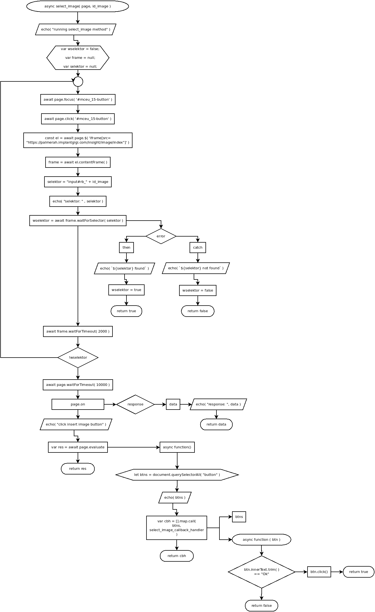

async select_image( page, id_image )
Flowchart

Code
async select_image( page, id_image ){
echo( "running select_image method" );
var wselektor = false;
var frame = null;
var selektor = null;
do{
await page.focus( '#mceu_15-button' );
await page.click( '#mceu_15-button' );
const el = await page.$( 'iframe[src="https://palmerah.implantgigi.com/insight/image/index"]' );
frame = await el.contentFrame();
selektor = "input#rb_" + id_image;
echo( "selektor: " , selektor );
wselektor = await frame.waitForSelector( selektor )
.then( ( )=>{
echo( `${selektor} found` );
wselektor = true;
return true;
} )
.catch( ( err )=>{
echo( `${selektor} not found` );
wselektor = false;
return false;
} );
await frame.waitForTimeout( 2000 );
} while( !wselektor );
await page.waitForTimeout( 10000 );
await frame.evaluate( ( selektor ) => {
let t = document.querySelector( selektor );
t.classList.remove( "d-none" );
t.click();
t.parentNode;
t.parentNode.click();
}, selektor );
await page.waitForTimeout( 10000 );
page.on( "response", function( data ){
echo( "response: ", data );
return data;
} );
echo( "click insert image button" );
var res = await page.evaluate( () => {
let btns = document.querySelectorAll( "button" );
echo( btns );
var cbh = [].map.call( btns, function( btn ){
if( btn.innerText.trim( ) == "Ok" ){
btn.click();
return true;
} else {
return false;
}
} );
return cbh;
} );
return res;
}
Refers to:
-
async function select_image_callback_handler( btn )